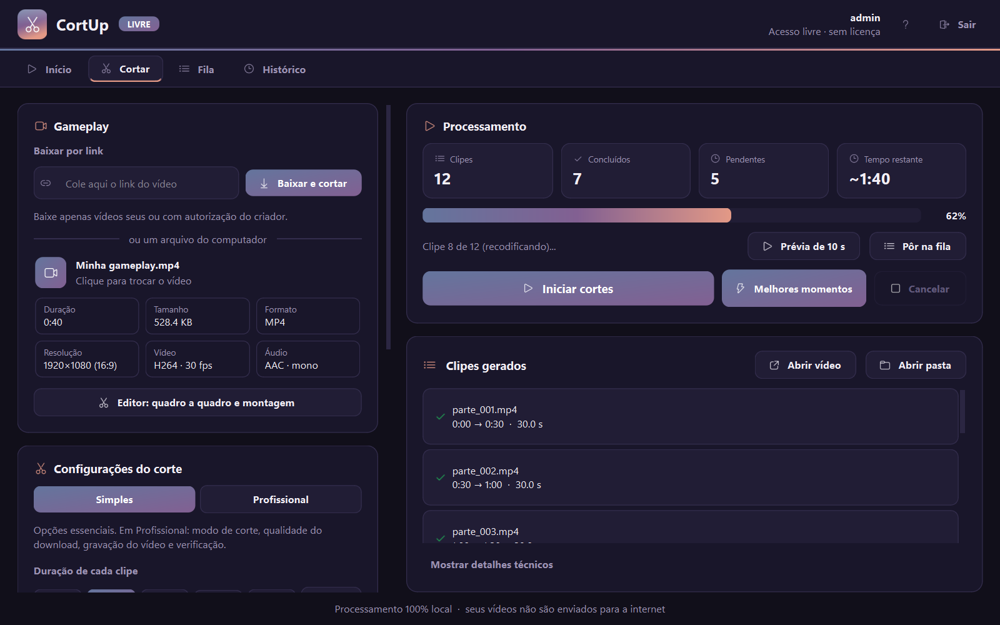

Telas
Por dentro do programa
Telas reais do CortUp. Clique numa imagem para ver em tamanho grande.




Pronto para cortar?
Grátis para Windows, sem cadastro e sem licença.
Telas
Telas reais do CortUp. Clique numa imagem para ver em tamanho grande.

Grátis para Windows, sem cadastro e sem licença.